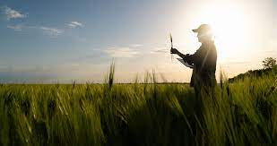

Our Services
Barangay Bukal is dedicated to serving its residents through a variety of essential services aimed at enhancing community well-being. We provide access to health and wellness programs, including regular medical check-ups and immunization drives. Our barangay also offers support for agricultural initiatives, helping local farmers improve their productivity and sustainability. Additionally, we facilitate community events, educational workshops, and skills training programs to empower residents and foster a sense of unity. With a commitment to transparency and active participation, Barangay Bukal strives to create a thriving environment where every citizen can contribute to and benefit from our collective progress.